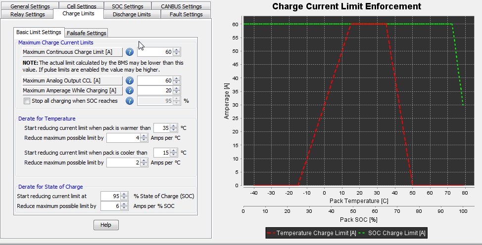

These settings relate to how the BMS enforces current limits (both for discharge and charge conditions). Since both discharge and charge screens have identical parameters, these were combined in this manual.
Associated Pages:
| < How Cell Balancing Works | Basic Limit Settings > |